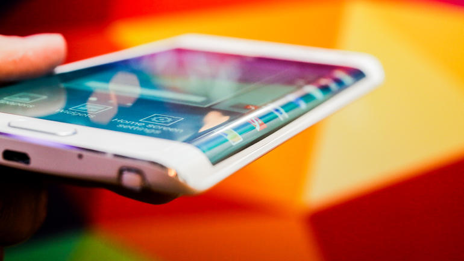
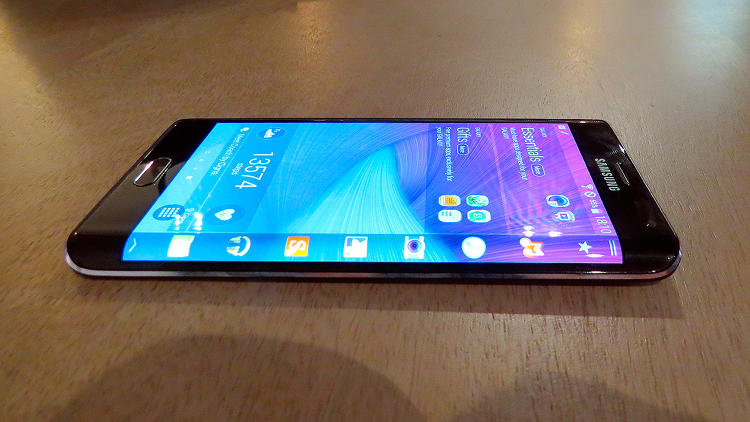

SAMSUNG GALAXY NOTE EDGE - Review
Now this is interesting. There were a trickle of rumours that Samsung was going to release a unique product into the smartphone market - something that would take advantage of the company's bendable OLED displays. And it has delivered with the Samsung Galaxy Note Edge. The Note Edge is a beautiful looking device that has a screen that folds over one side of the handset, offering up myriad possibilities with what to do with this extra bit or real estate. Well, I say extra - this is the same 5.7-inch screen that's seen on the Note but an inch of it drapes over the side, ready to take care of notifications so they don't get in the way of watching full-screen video and the like.
Screen
When I first picked up the Note Edge, I did notice a slight issue. The folded part of the screen was on the wrong side for me, because I am left handed. This meant that this extra bit of screen was in the way of my palm. But Samsung has remedied this with making the screen completely flippable. So as long as you don't mind the home button being on the top of the screen, then this is a handset for south paws as much as right-handed folk. The Samsung Galaxy Note Edge is fantastic in the hand. The added screen dimension makes it look and feel a lot more premium than its Note 4 bedfellow. It's definitely a handset that has wow factor, even if the added screen lip may be slightly lacking in uses at the moment. Samsung has tried its best to make this section of the phone useable, by creating a host of OS strips that you can add to the lip of the screen. These include things like weather, Twitter, and news updates. One great move Samsung has done is make the lip of the display work independent of the main screen. So if the main screen is completely off, one swipe of the lip and you can see your notifications and updates. This would be a great thing in a meeting where you don't want to use your full device but want access to small updates.
Innovative display
The new screen design in my hands on simply meant that it was easier for me to access applications. Samsung also informed me that the panel will evolve, once more software partners are on board. Another test I did to try out the innovative screen was watch a clip of a movie. As all of the controls went to the lip of the screen, the main part was completely free - the movie went completely to the edge and looked great. The new screen is a great addition to the Note range. By this I mean that everything else bar the screen is identical to the Samsung Galaxy Note 4 in specs. The screen does mean you get a 16:10 aspect ratio and Samsung did explain that the battery was a tad smaller (at 3,000) but everything else that is on the Note 4 is present and correct with the Samsung Galaxy Note Edge.
Features
While you can read a little more in-depth about the new features in our hands on Samsung Galaxy S4 review, here's a number of things that I thought were standout. The chassis now has a heartrate monitor, that was originally found on the Samsung Galaxy S5. This also acts as a trigger button for the camera when you want to do selfies.
S Pen
The S Pen has also vastly improved with two extra pen styles: fountain and highlighter. You can do so much more with the S Pen too. One of the most interesting aspects is that you can now use it mouse like to take grabs from websites and set up your own clippings service. You can also use the pen to shrink applications as you would a widget. This gives you better access to the homescreen and means you don't have to wade through a number of tabs. Multi-tasking on the Note Edge has also been improved - with a multi window of tabs much easier to access.
Early verdict
The Samsung Galaxy Note edge is stunning-looking device that really tries to do something different. I worry that Samsung will keep the Edge strictly limited edition. I hope not because this is a handset that is great to use and looks fantastic. It really does give the Note line-up the edge over its rivals.